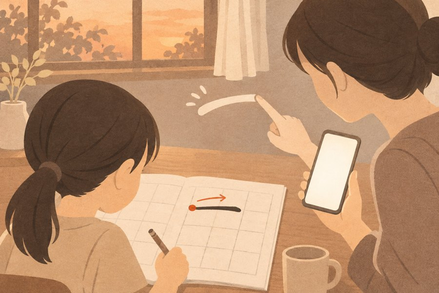

iPhone・iPad・Android 向け・漢字の書き順の辞典
書く前に、
書き順をしらべる。
宛名、芳名帳、連絡帳、子どもの宿題。人前で字を書く直前に「この字、どこから書くんだっけ」と手が止まることはありませんか。「書き順しらべ」は、さっと引いて、1画ずつ動く書き順で確かめるためのアプリです。
App Store・Google Play で見る（準備中）有料アプリです。一度買えば、すべての機能が使えます。あとからお金はかかりません。広告もありません。

こんな困りごとのために作りました
引きたい字が出てこない
漢字6,422字とひらがな・カタカナ180字の、全部に書き順があります。読めない字は指で書いて引けます。画数や順番が少しちがっても、形の近い字から並べます。
筆の向きが分からない
画ごとに、書き始めの朱の丸と、向きの矢印。1画ずつ前後に送れて、速さも3段階で変えられます。
なぞっても、合っているか分からない
なぞると、順番・向き・形を1画ごとに、指を離した瞬間にお知らせします。ちがう画を書いたら「それは3画目です」のように教えます。
画数が本によってちがう
しんにょうのように数え方で画数が変わる字には、字の画面に注記を書きました。常用漢字の書き順は、別のデータと突き合わせて確かめています。
読み方や使い方も知りたい
音読み・訓読み、よく使う用例とよみ（常用漢字は全部の字に）、部首、英語の意味まで、引いたその画面で読めます。
iPad の横向きで使えない
縦でも横でも。iPad と iPhone Duo を開いた横長の画面では、書き順と読み・用例を左右に並べます。
書き順しらべの使い方
引く
指で書く・読み（ひらがな・ローマ字）・英語・画数・貼り付けた文から。
見る
1画ずつ動く書き順。止める・もどす・すすむ。
なぞる
お手本の上を指でなぞると、画ごとに合っているかが分かります。
見ないで書く
読みと用例（「秘□（ひみつ）」）を見て書く練習。まちがえた字は日をあけずにまた出します。
入っているもの
| 漢字 | 6,422字（常用漢字 2,136字・うち小学校で習う字 1,026字、人名用漢字 774字、ほか）。全部に書き順と画数 |
|---|---|
| かな | ひらがな・カタカナ 180字（小さい字・濁点の字も） |
| 字の情報 | 音読み・訓読み、用例とよみ（5,135字。常用漢字は全部）、部首（214部首）、学年と区分、英語の意味、画数の注記 |
| 一覧 | 学年（小学1〜6年）・中学以上の常用漢字・人名用漢字・常用外・部首・画数（1〜30画）・ひらがな・カタカナ・しおり |
| 練習 | 見ないで1画ずつ書く。学年・かな・まちがえた字・しおり・最近調べた字から。忘れかけの順に出し、3回つづけて書けたら「覚えた字」 |
| しおり | よく調べる字に、書く場面のメモ（「芳名帳で書く」など）。iPhone・iPad では iCloud でそろいます |
| そのほか | 通信しなくても引けます。ショートカット・Siri・Spotlight から字を開けます。ダークモード対応 |
書き順は KanjiVG、読み・画数・学年・英語の意味は KANJIDIC2、用例は JMdict を、このアプリのために組み直して入れています。くわしくはデータの出典へ。